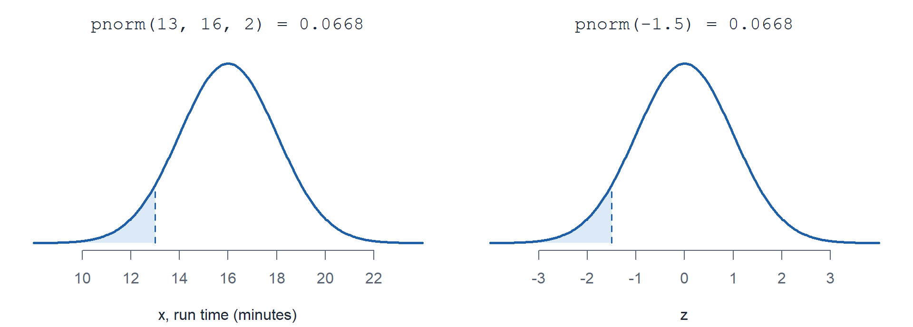
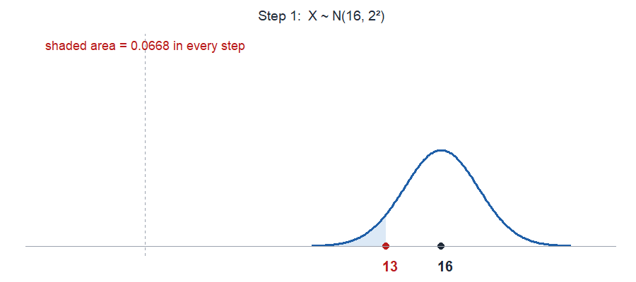

Forge 5
Lessons 11-13
Lessons 11-13
- L11 Continuous Random Variables
- L12 Normal Distribution
- L13 Exponential Distribution
Coverage Plan
| Day | Date | Month | Class day | Hour | Room | Lesson | Out | Covered by | Who is available |
|---|---|---|---|---|---|---|---|---|---|
| Wed | 16 | Sep | 1 | C | TH317 | L11 | Day | Adams | Crow, Dykhuis, Hedglin, Lovas, Ozga, Thomas, Turner |
| Wed | 16 | Sep | 1 | D | TH317 | L11 | Day | Crow | Adams, Dykhuis, Hedglin, Lovas, Ozga, Thomas |
| Wed | 16 | Sep | 1 | A | TH317 | L11 | Strack | Turner | Dykhuis, Freeny, Lovas, Ozga, Thomas |
| Wed | 16 | Sep | 1 | B | TH317 | L11 | Strack | Turner | Adams, Crow, Dykhuis, Freeny, Lovas, Ozga, Thomas |
| Wed | 16 | Sep | 1 | D | TH321 | L11 | Strack | Turner | Adams, Dykhuis, Hedglin, Lovas, Ozga, Thomas |
| Thu | 24 | Sep | 2 | A | TH319 | L14 | Thomas | TBD | Adams, Day, Dykhuis, Freeny, Lovas, Ozga, Turner |
| Thu | 24 | Sep | 2 | B | TH319 | L14 | Thomas | TBD | Adams, Crow, Day, Dykhuis, Freeny, Hedglin, Lovas, Ozga, Strack |
| Tue | 06 | Oct | 2 | C | TH319 | L18 | Dykhuis | TBD | Adams, Crow, Day, Freeny, Lovas, Ozga, Strack, Thomas |
| Tue | 06 | Oct | 2 | D | TH319 | L18 | Dykhuis | TBD | Adams, Crow, Freeny, Hedglin, Lovas, Ozga, Strack, Thomas |
| Thu | 08 | Oct | 2 | C | TH319 | L19 | Dykhuis | TBD | Adams, Crow, Day, Freeny, Lovas, Ozga, Strack, Thomas |
| Thu | 08 | Oct | 2 | D | TH319 | L19 | Dykhuis | TBD | Adams, Crow, Freeny, Hedglin, Lovas, Ozga, Strack, Thomas |
| Tue | 17 | Nov | 2 | C | TH319 | L32 | Dykhuis | TBD | Adams, Crow, Day, Freeny, Lovas, Ozga, Strack, Thomas |
| Tue | 17 | Nov | 2 | D | TH319 | L32 | Dykhuis | TBD | Adams, Crow, Freeny, Hedglin, Lovas, Ozga, Strack, Thomas |
| Thu | 03 | Dec | 2 | C | TH319 | L37 | Dykhuis | TBD | Adams, Crow, Day, Freeny, Lovas, Ozga, Strack, Thomas |
| Thu | 03 | Dec | 2 | D | TH319 | L37 | Dykhuis | TBD | Adams, Crow, Freeny, Hedglin, Lovas, Ozga, Strack, Thomas |
Already covered (16)
| Day | Date | Month | Class day | Hour | Room | Lesson | Out | Covered by | Who is available |
|---|---|---|---|---|---|---|---|---|---|
| Wed | 19 | Aug | 1 | E | TH321 | L2 | Lovas | Turner | Adams, Crow, Day, Dykhuis, Hedglin, Strack, Thomas |
| Thu | 20 | Aug | 2 | E | TH321 | L2 | Lovas | Day | Crow, Dykhuis, Freeny, Hedglin, Strack, Thomas, Turner |
| Thu | 20 | Aug | 2 | F | TH321 | L2 | Lovas | Day | Crow, Dykhuis, Freeny, Hedglin, Strack, Thomas, Turner |
| Fri | 21 | Aug | 2 | E | TH321 | L3 | Lovas | Day | Crow, Dykhuis, Freeny, Hedglin, Strack, Thomas, Turner |
| Fri | 21 | Aug | 2 | F | TH321 | L3 | Lovas | Day | Crow, Dykhuis, Freeny, Hedglin, Strack, Thomas, Turner |
| Fri | 04 | Sep | 2 | A | TH319 | L8 | Thomas | Pleuss | Adams, Day, Dykhuis, Freeny, Lovas, Ozga, Turner |
| Fri | 04 | Sep | 2 | B | TH319 | L8 | Thomas | Pleuss | Adams, Crow, Day, Dykhuis, Freeny, Hedglin, Lovas, Ozga, Strack |
| Wed | 09 | Sep | 2 | A | TH321 | L9 | Hedglin | Adams | Day, Dykhuis, Freeny, Lovas, Ozga, Turner |
| Wed | 09 | Sep | 2 | C | TH321 | L9 | Hedglin | Crow | Adams, Day, Freeny, Lovas, Ozga, Strack, Thomas |
| Thu | 10 | Sep | 1 | A | TH319 | L9 | Hedglin | Turner | Day, Dykhuis, Freeny, Lovas, Ozga, Thomas |
| Thu | 10 | Sep | 1 | B | TH319 | L9 | Hedglin | Turner | Adams, Crow, Day, Dykhuis, Freeny, Lovas, Ozga, Thomas |
| Fri | 11 | Sep | 2 | A | TH321 | L10 | Hedglin | Freeny | Adams, Day, Dykhuis, Lovas, Ozga |
| Fri | 11 | Sep | 2 | C | TH321 | L10 | Hedglin | Day | Adams, Crow, Freeny, Lovas, Ozga, Thomas |
| Fri | 11 | Sep | 2 | A | TH317 | L10 | Strack | Turner | Adams, Day, Dykhuis, Lovas, Ozga |
| Tue | 15 | Sep | 2 | A | TH317 | L11 | Strack | Turner | Adams, Dykhuis, Freeny, Lovas, Ozga |
| Tue | 15 | Sep | 2 | D | TH321 | L11 | Day | Hedglin | Adams, Crow, Freeny, Lovas, Ozga, Thomas |
Instructor lay down, who teaches which hour
Team 1 Team 2
| Day 1 | TH317 | TH319 | TH321 | TH322 |
|---|---|---|---|---|
| A | Strack | Hedglin | Adams | Crow |
| B | Strack | Hedglin | ||
| C | Day | Freeny | ||
| D | Day | Freeny | Strack | |
| E | Ozga | Freeny | Lovas | |
| F | Ozga | Freeny |
| Day 2 | TH317 | TH319 | TH321 | TH322 |
|---|---|---|---|---|
| A | Strack | Thomas | Hedglin | Crow |
| B | Turner | Thomas | ||
| C | Turner | Dykhuis | Hedglin | |
| D | Turner | Dykhuis | Day | |
| E | Ozga | Adams | Lovas | |
| F | Ozga | Adams | Lovas |
Team 1 (Crow, Day, Dykhuis, Freeny, Hedglin, Strack) is free Day 2 hours B, E, F.
Team 2 (Adams, Lovas, Ozga, Thomas, Turner) is free Day 1 hours B, C, D.
To Do
Data Agreement
Managed at the instructor level. Keep hard copies, and get them completed before cadets get into Vantage.
Course Project
Prepare your workspace in Vantage so that when cadets sign in, they get what you want them to have. The EDA lesson is Lesson 14 (Day 1 on 23 Sep, Day 2 on 24 Sep).
WPR I
Day 2 on 29 Sep, Day 1 on 30 Sep.
- Make up tracker: WPR1 Tracker. Log every make up there.
- Academic security runs a week from the first exam, so through 6 Oct.
Guest Lecture

- Who: COL Tim Sikora, commander of the Cyber Protection Brigade, math instructor here from 2016 to 2019.
- What: Guest lecture.
- When: 30 Sep, Dean’s Hour.
- Where: Robinson Auditorium.
Lesson 11: Continuous Random Variables
Devore 4.1, 4.2.
Worked Example
\[f_X(x) = \begin{cases} k x & 0 \le x \le 4 \\ 0 & \text{otherwise} \end{cases}\]
Solve for \(k\). Total area is 1.
\[\int_0^4 k x \, dx = k \frac{x^2}{2} \bigg|_0^4 = 8k = 1 \quad \Longrightarrow \quad k = \frac{1}{8}\]
Fully define the cdf. Integrate the pdf from the left edge of the support.
\[F_X(x) = \int_0^x \frac{1}{8} t \, dt = \frac{x^2}{16}\]
\[F_X(x) = \begin{cases} 0 & x < 0 \\ \dfrac{x^2}{16} & 0 \le x \le 4 \\ 1 & x > 4 \end{cases}\]
Find a probability two ways. \(P(1 \le X \le 2)\).
\[\begin{aligned} \text{pdf} \quad & \int_1^{2} \frac{1}{8} x \, dx = \frac{x^2}{16} \bigg|_1^{2} = \frac{4 - 1}{16} = 0.1875 \\ \text{cdf} \quad & F(2) - F(1) = \frac{4}{16} - \frac{1}{16} = 0.1875 \end{aligned}\]
Why \(P(X = c) = 0\). The integral over a single point has no width.
\[P(X = c) = \int_c^c f(x) \, dx = 0\]
So \(\le\) and \(<\) give the same answer here, unlike L8 through L10.
Expected value and variance.
\[\begin{aligned} E(X) &= \int_{-\infty}^{\infty} x \, f(x) \, dx \\ E(X^2) &= \int_{-\infty}^{\infty} x^2 \, f(x) \, dx \\ V(X) &= E(X^2) - [E(X)]^2 \\ \sigma &= \sqrt{V(X)} \end{aligned}\]
\[\begin{aligned} E(X) &= \int_0^4 x \cdot \frac{1}{8} x \, dx = \frac{1}{8} \cdot \frac{x^3}{3} \bigg|_0^4 = \frac{8}{3} = 2.667 \\ E(X^2) &= \int_0^4 x^2 \cdot \frac{1}{8} x \, dx = \frac{1}{8} \cdot \frac{x^4}{4} \bigg|_0^4 = 8 \\ V(X) &= E(X^2) - [E(X)]^2 = 8 - \frac{64}{9} = \frac{8}{9} = 0.889 \\ \sigma &= \sqrt{0.889} = 0.943 \end{aligned}\]
Lesson 12: Normal Distribution
Devore 4.3.
What Cadets Should Look For
- A measurement that piles up around a center and tails off evenly on both sides.
- A mean and a standard deviation. Both are needed to fix the distribution.
Parameters
\(\mu\) is the center. \(\sigma\) is the spread.
Cadet 2 mile run times average 16 minutes with a standard deviation of 2 minutes.
NoteFully specify the distribution
\[X \sim N(\mu = 16, \sigma^2 = 2^2)\]
- Designate the random variable. \(X\) is a cadet’s run time in minutes.
- Name the distribution. Normal.
- Specify the parameters. \(\mu = 16\), \(\sigma = 2\).
Mean and Variance
\[\begin{aligned} \mu = E(X) &= \mu = 16 \\ \sigma^2 = V(X) &= \sigma^2 = 4 \\ \sigma &= 2 \end{aligned}\]
The parameters are the mean and the variance.
Mean and variance calculations
Substitute \(x = \mu + \sigma z\), where \(\phi(z)\) is the standard normal pdf. \(\int \phi(z)\,dz = 1\), and \(z\,\phi(z)\) is odd, so it integrates to 0.
\[\begin{aligned} E(X) &= \int_{-\infty}^{\infty} x \, f(x) \, dx \\ &= \int_{-\infty}^{\infty} (\mu + \sigma z)\, \phi(z) \, dz \\ &= \mu(1) + \sigma(0) \\ &= \mu \\[1em] V(X) &= E\left[(X - \mu)^2\right] \\ &= \sigma^2 \int_{-\infty}^{\infty} z^2 \, \phi(z) \, dz \\ &= \sigma^2 \left( \Big[-z\,\phi(z)\Big]_{-\infty}^{\infty} + \int_{-\infty}^{\infty} \phi(z) \, dz \right) \\ &= \sigma^2(0 + 1) \\ &= \sigma^2 \end{aligned}\]
The last step is integration by parts with \(u = z\), \(dv = z\,\phi(z)\,dz\), \(v = -\phi(z)\). With \(\mu = 16\), \(\sigma = 2\): \(E(X) = 16\), \(V(X) = 4\).
Standardize
Any normal becomes the standard normal \(Z \sim N(0, 1)\).
\[z = \frac{x - \mu}{\sigma} = \frac{13 - 16}{2} = -1.5\]
Importantpnorm of x is pnorm of z
pnorm(13, 16, 2) and pnorm(-1.5) are the same area, 0.0668.

In R-Lite
pnorm(x, mean, sd) is the cdf. The third argument is the standard deviation \(\sigma\), not the variance.
| R-Lite | Standardized | ||
|---|---|---|---|
| \(P(X \le 13)\) | pnorm(13, 16, 2) |
pnorm(-1.5) |
0.0668 |
| \(P(X < 13)\) | pnorm(13, 16, 2) |
pnorm(-1.5) |
0.0668 |
| \(P(X > 19)\) | 1 - pnorm(19, 16, 2) |
1 - pnorm(1.5) |
0.0668 |
pnorm(19, 16, 2, lower.tail = FALSE) |
pnorm(1.5, lower.tail = FALSE) |
0.0668 | |
| \(P(15 \le X \le 18)\) | pnorm(18, 16, 2) - pnorm(15, 16, 2) |
pnorm(1) - pnorm(-0.5) |
0.5328 |
| 90th percentile | qnorm(0.90, 16, 2) |
16 + 2 * qnorm(0.90) |
18.56 |
Where cadets go wrong:
- Variance in the sd slot. \(\sigma^2 = 4\) means sd
2. - Leaving the parameters off.
pnorm(13)defaults to mean 0, sd 1. dnormis not a probability. It is the height of the pdf.
Critical Values, aka Percentiles
\(z_\alpha\) has area \(\alpha\) to its right, so it is the \(100(1-\alpha)\)th percentile.
| R-Lite | ||
|---|---|---|
| \(z_{0.05}\), 95th percentile | qnorm(0.95) |
1.645 |
| \(z_{0.025}\), 97.5th percentile | qnorm(0.975) |
1.96 |
Lesson 13: Exponential Distribution
Devore 4.4.
What Cadets Should Look For
- A wait, a time or distance until the next event.
- A rate of events, or a mean wait. Either one fixes the distribution.
- The L10 link: a Poisson count at rate \(\lambda\) has exponential waits between events at the same \(\lambda\).
Parameters
\(\lambda\) is the rate. The mean wait is its reciprocal.
\[\mu = \frac{1}{\lambda}\]
Cadets arrive at the counter at \(\lambda = 3\) per hour, so the mean wait between arrivals is 20 minutes.
NoteFully specify the distribution
\[X \sim \text{Exp}(\lambda = 1/20)\]
- Designate the random variable. \(X\) is the minutes until the next arrival.
- Name the distribution. Exponential.
- Specify the parameter. \(\lambda = 1/20\) per minute.
Mean and Variance
\[\begin{aligned} \mu = E(X) &= \frac{1}{\lambda} = 20 \\ \sigma^2 = V(X) &= \frac{1}{\lambda^2} = 400 \\ \sigma &= \frac{1}{\lambda} = 20 \end{aligned}\]
The mean and the standard deviation are the same number.
Mean and variance calculations
\(f(x) = \lambda e^{-\lambda x}\) for \(x \ge 0\). Integrate by parts; the boundary terms are 0 at both ends.
\[\begin{aligned} E(X) &= \int_0^{\infty} x \, \lambda e^{-\lambda x} \, dx \\ &= \Big[-x e^{-\lambda x}\Big]_0^{\infty} + \int_0^{\infty} e^{-\lambda x} \, dx \\ &= 0 + \frac{1}{\lambda} \\ &= \frac{1}{\lambda} \\[1em] E(X^2) &= \int_0^{\infty} x^2 \, \lambda e^{-\lambda x} \, dx \\ &= \Big[-x^2 e^{-\lambda x}\Big]_0^{\infty} + \frac{2}{\lambda} \int_0^{\infty} x \, \lambda e^{-\lambda x} \, dx \\ &= 0 + \frac{2}{\lambda} \cdot \frac{1}{\lambda} \\ &= \frac{2}{\lambda^2} \\[1em] V(X) &= E(X^2) - [E(X)]^2 \\ &= \frac{2}{\lambda^2} - \frac{1}{\lambda^2} \\ &= \frac{1}{\lambda^2} \end{aligned}\]
With \(\lambda = 1/20\): \(E(X) = 20\), \(E(X^2) = 800\), \(V(X) = 800 - 400 = 400\).
In R-Lite
pexp(x, rate) is the cdf. The second argument is the rate \(\lambda\), not the mean.
| R-Lite | ||
|---|---|---|
| \(P(X \le 10)\) | pexp(10, 1/20) |
0.3935 |
| \(P(X < 10)\) | pexp(10, 1/20) |
0.3935 |
| \(P(X > 30)\) | 1 - pexp(30, 1/20) |
0.2231 |
pexp(30, 1/20, lower.tail = FALSE) |
0.2231 | |
| \(P(10 \le X \le 30)\) | pexp(30, 1/20) - pexp(10, 1/20) |
0.3834 |
| Median | qexp(0.5, 1/20) |
13.86 |
Where cadets go wrong:
- Mean in the rate slot. A mean of 20 means rate
1/20. - Mixed units. Rate and \(x\) must use the same time unit.
- Leaving the rate off.
pexp(10)defaults torate = 1. dexpis not a probability. It is the height of the pdf.
Poisson vs Exponential
Same counter, same \(\lambda = 3\) arrivals per hour. Two different questions.
| Poisson (L10) | Exponential (L13) | |
|---|---|---|
| Random variable | Count of arrivals in a window | Wait until the next arrival |
| Type | Discrete, \(0, 1, 2, \dots\) | Continuous, \(x \ge 0\) |
| \(\lambda\) | Rate, 3 per hour | Rate, 3 per hour |
| Mean | \(\mu = \lambda t\) arrivals | \(\mu = 1/\lambda\) hours |
| Needs a window \(t\)? | Yes | No |
| Second argument in R | The mean \(\lambda t\) | The rate \(\lambda\) |
| R-Lite | ppois(x, 3 * t) |
pexp(x, 3) |
ImportantPoisson takes the mean, exponential takes the rate
ppois wants \(\lambda t\). pexp wants \(\lambda\). For a mean wait of 20 minutes, pexp(x, 1/20), never pexp(x, 20).
Same event, both ways. No arrivals in the next 20 minutes (\(t = 1/3\) hour).
\[\begin{aligned} \text{Poisson} \quad & P(\text{count} = 0), \ \mu = 3(1/3) = 1 & \texttt{dpois(0, 1)} &= 0.3679 \\ \text{Exponential} \quad & P(\text{wait} > 1/3) & \texttt{1 - pexp(1/3, 3)} &= 0.3679 \end{aligned}\]